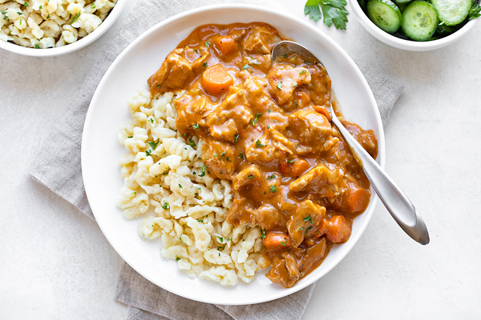

Chicken Paprikash

Description
This is a classic hungarian recipe that I prefer served over spaetzle. It
is a very simple recipe that is very tasty. A tomato and pepper based
sauce accompanies braised chicken.
If you've got any taste, you're gonna love this one.
Ingredients
- 1 whole chicken
- 1/2 cup flour
- 1/2 cup butter
- 1/2 cup oil
- 1/2 cup paprika
- 1/2 cup sour cream
- 1/2 cup chicken stock
- 1/2 cup tomato paste
- 1/2 cup water
- 1/2 cup onions
- 1 Anaheim or other mild pepper
- 1/2 cup bell peppers
- 1/2 cup garlic
- 1/2 cup salt
- 1/2 cup pepper
Steps
- Chop your veggies.
- Heat your pan to medium high, add oil
- Season your chicken with salt and pepper
- Brown Chicken
- Remove chicken and add onions
- Add peppers and garlic and saute
- Add tomato paste and paprikas
- Add chicken and liquid and simmer for 30 mintues
- Add sour cream and simmer for 10 minutes
- Serve over spaetzle